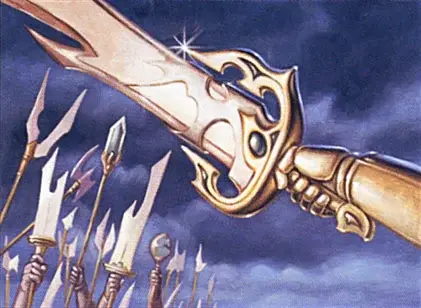

Меч отцов
Sword of the Paruns
Оружие (длинный меч), очень редкое (требуется настройка)

Рекомендованная стоимость 5 001-50 000 зм
Вы получаете бонус +1 к броскам атаки и урона, совершённым этим магическим оружием. Кроме того, один раз в каждый ваш ход вы можете использовать одно из следующих свойств, если вы держите меч:
- Сразу же после того, как вы используете действие Атака для атаки этим мечом, вы можете позволить одному существу в пределах 60 футов от вас реакцией совершить одну атаку оружием.
- Сразу же после того, как вы совершаете действие Рывок, вы можете позволить одному существу в пределах 60 футов от вас реакцией переместиться на максимум своей скорости.
- Сразу же после того, как вы совершите действие Уклонение, вы можете позволить одному существу в пределах 60 футов от вас реакцией получить преимущества действия Уклонение.